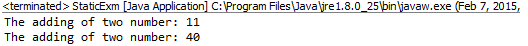

Modifier Types Java
Modifiers are keywords which changes themeaning. The types of modifiers are: access modifiers and non-access modifiers.
The access modifiers are keywords which specify the access policies on the member and the class+.
Four types of access modifiers:
- private
- default
- protected
- public
The non-access modifiers are static, final, abstract.
Private:
- Members/methods which are declared as private cannot be access from outside the class and package also.
- Class cannot be private.
- Private members or methods cannot be access even by inheriting the class.
Example:
public class PrivateDemo
{
private int age;
private String color;
private void test()
{
System.out.println(“Inside test method”);
}
}
public class Run
{
public static void main(String args[])
{
PrivateDemo obj=new PrivateDemo();
System.out.println(obj.age);//Compile Time Error
obj.test();//Compile Time Error
}
} |
Default:
- Members or class are declared without using any access modifier is called default members.
- Default members cannot be access outside the package.
- Default members will not be involved in inheritance of outside the package.
Example:
Two packages firstpack and secondpack are created. Here UserMsg class is not public, so it cannot be accessed from outside the package.
//save as UserMsg.java
package firstpack;
class UserMsg
{
void msg()
{
System.out.println("Hello User");
}
}
|
//save below as Demo.java
package secondpack;
import firstpack.*;
class Demo
{
public static void main(String args[]){
UserMsg obj1 = new UserMsg ();//Compile Time Error
obj1.msg();//Compile Time Error
}
} |
Protected:
The protected member is accessible within package and outside the package but there should be inheritance only.
Example:
Two packages firstpack and secondpack are created. Here UserMsg class is not public, so can be accessed from outside the package. But msg method is declared as protected, so it can be accessed from outside the class only there is inheritance.
//save as UserMsg.java
package firstpack;
class UserMsg
{
protected void msg()
{
System.out.println("Hello");
}
}
//save by Demo.java
package secondpack;
import firstpack.*;
class Demo extends UserMsg{
public static void main(String args[])
{
Demo obj = new Demo();
obj.msg();
}
}
|
When you compile and run this program, you will get
Output
| Hello |
Public:
Modifiers which can be access anywhere in the project.
Example:
//save as UserMsg.java
package firstpack;
class UserMsg
{
public void msg()
{
System.out.println("Hello");
}
}
//save as Demo.java
package secondpack;
import firstpack.*;
class Demo{
public static void main(String args[])
{
Demo obj = new Demo();
obj.msg();
}
}
|
Understanding all java access modifiers:
Non Access Modifiers:
- Static
- Final
- Abstract
Static:
The members(Data member and member Fuction) which are declared by using static keyword are called static members.
- Ststic members are the members which are loaded to the memory only once.
- These static members can be access either by using class name or by using object.
- Static members are also known as class members.
When ever the JVM encounters the class name first time, it loads all the static members to static pool.
Example:
public class StaticExm
{
staticinttotSum = 0;
publicstaticvoidadditionNum(int a, int b)
{
intmethodSum = a+b;
System.out.println("The adding of two number: "+methodSum);
}
public static void main(String[] arguments)
{
StaticExm.totSum=10; // static data-member accessing by using class name
StaticExm.additionNum(5, 6); // Static method accessing by using class name
StaticExm s1= newStaticExm(); //creating Object of class
s1.totSum = 22; //static data-member accessing by creating instance/object
s1.additionNum(10, 30); //static method accessing by creating instance/object
}
}
|
The output:
Final:
keyword is used to finalise the behaviour or initialiazation of a member.
- The variables which are cannot be re-initialized are called final variables.
- The data within the object can be changed. Hence the object state can be changed but not the reference.
- The final modifier is used with staticto make the constant a class variable.
Example:
package firstpack;
public class FinalVariableDemo{
finalintuserAge=10;
public static final int votingAge=18; //Declaring constant
public static void main(String args[])
{
FinalVariableDemofd = new FinalVariableDemo();
Fd.userAge=18;//error: cannot be re-initialise
}
}
|
Final Methods:
- A method which is declared with final keyword it cannot be overridden by any childclasses.
- As same as the final modifier will not allow to modify the method in a sub/child class.
Example:
public class UserName {
public final void Name()
{
System.out.println(“User Name”);
}
}
|
Final Classes:
A class is declared as final then we cannot inherit any feature from the final class.
Example:
public final class UserName
{
int i=0;
public void test()
{
//body of test method
}
} |
Abstract: is a keyword used to make method, class as abstract.
- Method which has a body is called concrete method.
Abstract Method:
- Method which doesn’t have body is called abstract method.
- Abstract method must be declared with a keyword “abstract” and should end with semicolon.
Syntax:
| Abstract public void testName(); // abstract method |
Abstract Class:
- A class which has atleast one abstract method is known as abstract class.
- Abstract class cannot be instantiated.
- Abstract class ensures all sub-class should be implement abstract methods mandatorily.
- Abstract class can have both abstract and concrete methods.
Example:
abstract class UserDetails{
private String Name;
private int age;
public abstract void getDetails();//an abstract method
public void educationDetails() // concrete method
{
System.out.println(“education details”);
}
} |
« Previous Next »